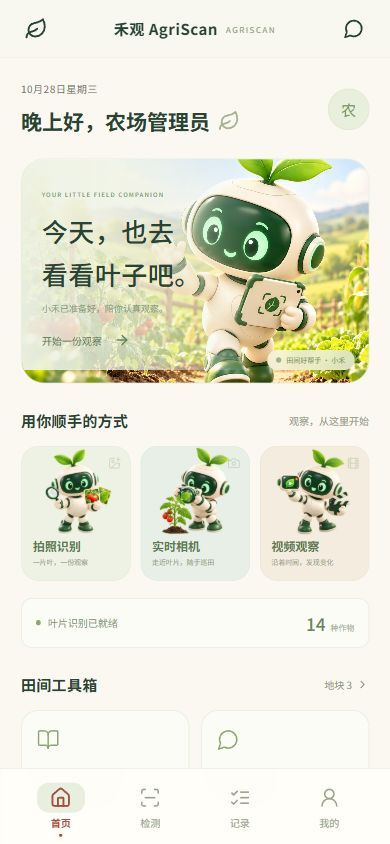

01 · 图片观察
拍一张，看得更仔细。
上传叶片照片，查看作物、检测结果与目标框。原图和识别图并排，线索一眼可见。
让叶片完整入镜，保留周边叶脉与叶缘；尽量使用自然光，避开反光和遮挡。
去观察一片叶子不用先挑选作物。上传清晰的叶片图像，
让模型识别作物与状态，再把结果留进档案。
上传叶片照片，查看作物、检测结果与目标框。原图和识别图并排，线索一眼可见。
让叶片完整入镜，保留周边叶脉与叶缘；尽量使用自然光，避开反光和遮挡。
去观察一片叶子开启手机相机，按间隔更新观察结果。可以暂停、继续，再选择保存值得记录的一帧。
在 Android 应用 中打开实时相机并授予权限。画面稳定后观察结果，暂停后再决定是否保存。
获取 Android 应用上传一段巡田视频，按时间抽样分析，在时间轴中查看各时点的结果并保存观察记录。
缓慢移动镜头，让叶片保持清晰。采样结果会保留时间点，便于回到原视频核对画面。
了解采样方式目标框标出模型检测到的目标区域，不等于病斑的精确轮廓。视频和实时相机按间隔抽帧，结果用于辅助观察，需结合田间情况确认。
看见一片叶子的变化，
也留住一整季的生长。
一次观察有结果，持续记录才有线索。

在手机上拍照、巡田、查记录。
把每一次发现留下来，回到电脑前也能接着看。
点选一步，看看接下来能做什么。
原图、目标框和识别结果一起查看，先核对画面，再结合现场情况判断。
让第一次使用，也像和小禾见面一样轻松。
可以。连接同一个禾观服务后，使用同一账户登录即可同步自己的检测和地块；不同账户的数据互不可见，小禾对话也只对所属账户开放。
在自然光下拍清叶片，避开反光、阴影与遮挡。尽量让叶片主体完整，拍摄异常部位时也保留周边叶脉与叶缘细节。
模型分数反映对当前画面的判断，不能直接作为田间准确率或患病概率。光照、背景、作物品种和生长环境都可能影响结果。
目前使用间隔抽帧方式。视频结果显示采样时点，实时相机在上一帧处理完成后再获取下一帧；它们可能遗漏短暂出现的异常。
从本页下载 APK 后，按手机系统提示允许对应浏览器或文件管理器安装此应用。首次使用相机需要授予相机权限；离开实时检测页或切至后台会关闭相机。
检测记录仍会保留。可以稍后重试，或请管理员在独立管理端检查大模型服务地址、模型、密钥与服务状态。